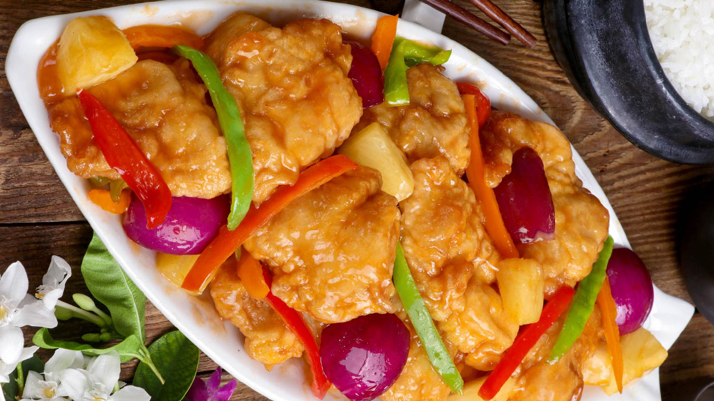

Sweet and Sour Fish
This is a recipe Sweet and Sour Fish.
Prep: 15 minutes
Cooking: 50 minutes
Total: 1 hour 5 minutes
Ingredients
- 1 pound tilapia fillets, cut into 2-inch pieces
- 2 tablespoons soy sauce
- 1/2 cup flour
- 1/2 cup cornstarch
- Salt and pepper to taste
- 1 egg, well beaten
- Cooking oil
- 1 red bell pepper, seeded, cored, and cut into cubes
- 1 onion, peeled and sliced thinly
For Sweet and Sour Sauce
- 1 cup pineapple juice
- 1/2 cup rice vinegar
- 1/4 cup ketchup
- 1/2 cup brown sugar
- 1 tablespoon cornstarch
- 1 teaspoon salt
How to Cook Sweet and Sour Fish
- In a bowl, combine fish and soy sauce. Marinate for about 30 minutes in the refrigerator. Drain well.
- In a bowl, whisk egg until frothy.
- In another bowl, combine flour, cornstarch, and salt and pepper to taste.
- Dredge fish fillets in flour mixture, dip in the beaten egg, and then dredge again in flour mixture to fully coat.
- In a pan over medium heat, heat about 1-inch deep of oil. Add battered fish fillets and cook, turning once or twice, until golden and cooked through. Remove from pan and drain on paper towels.
- In a bowl, combine pineapple juice, vinegar, ketchup, sugar, cornstarch, and salt. Stir until smooth.
- In a pan over medium heat, heat about 1 tablespoon oil. Add bell peppers and onions and cook, stirring regularly, until half cooked. Remove from pan and set aside.
- In the pan, add sauce mixture and bring to a boil, whisking regularly, for about 2 to 3 minutes or until thickened.
- Add bell peppers and onions and cook for about 1 minute or until tender yet crisp.
- Add fried fish fillets and cook and toss quickly just until coated with sauce. Serve hot.